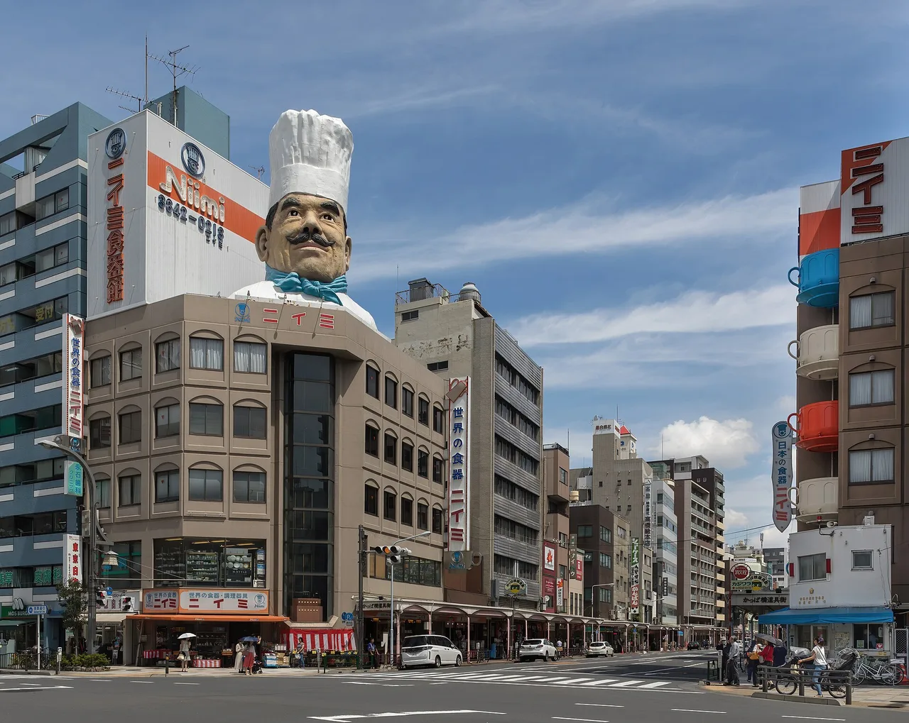
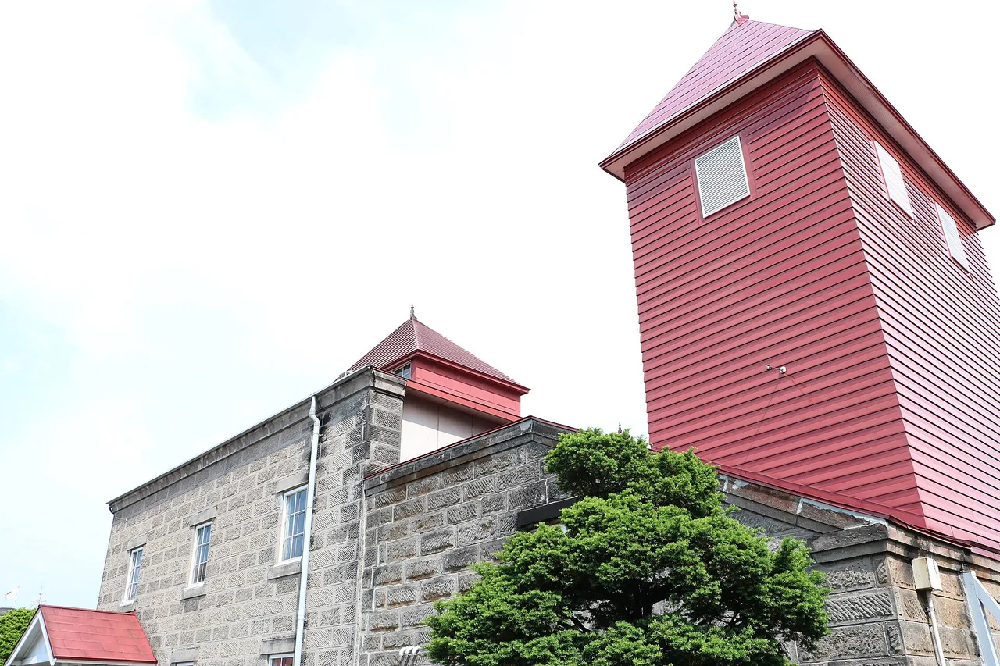

What to bring home from Japan besides the usual souvenirs
There is nothing wrong with KitKats. They are cheap, they travel, and everybody is pleased to get one. But if you are going to carry something home from Japan, the more interesting question is not "what do they sell to tourists" — it is "what does Japan make better than anywhere else, and where does it come from". Start from what you already like and the answer is usually a specific town rather than an airport shelf. This guide sorts it by interest, points you at the region behind each thing, and covers the part every souvenir list skips: getting it home, and the tax-free rules that change on 1 November 2026.

Start from what you like
Every row here is a real regional specialism, not a category invented for gift shops. The right-hand column is the guide that covers it properly.
| If you like… | Bring home | Where it comes from | Guide |
|---|---|---|---|
| Cooking | A kitchen knife | Sakai, Seki, Echizen, Tsubame-Sanjo | Knife towns |
| Keeping knives sharp | A whetstone | Kyoto's natural stone quarries; synthetic makers nationwide | Whetstones |
| Working with wood | Saws, chisels, planes | Miki, Sanjo, Ono | Hand tools |
| Shaving | Feather or Kai blades | Seki, Gifu | Razors |
| Tea | Sencha, gyokuro, matcha | Uji, Yame, Shizuoka, Chiran, Sayama | Tea regions |
| Making tea properly | Bowl, whisk, scoop | Kiln towns nationwide | Matcha sets |
| Whisky | Distillery-exclusive bottlings | Yoichi, Yamazaki, Hakushu, Komagatake | Whisky towns |
| Ceramics | Tableware, teapots, one good piece | Tokoname, Mashiko, Arita, Imbe, Shigaraki | Pottery towns |
| Stationery | A planner or notebook | Nationwide; the planner culture is the point | Planners & techō |
| Model kits | Gunpla, castle kits | Shizuoka (Bandai Hobby Center) | Gunpla · Castle kits |
| Anime and hobby goods | Japan-only merchandise | Akihabara, Nakano, Den Den Town | Japan-only merch |
| Collecting | Stamps, seals and cards — free | Shrines, stations, town halls | Goshuinchō · Eki stamps |
The four that reward a detour
Any of the twelve above will make a good souvenir. Four of them are worth building a day of the trip around, because the town is as interesting as the object.
A knife, from a town that only makes knives

The single best value-for-weight thing to carry out of Japan. A good double-bevel santoku costs a fraction of the equivalent European knife and will outlast the trip by decades. Sakai makes the single-bevel professional blades, Seki makes the volume, Echizen hand-forges, Tsubame-Sanjo does stainless and Western shapes.
Read: Japan's knife towns, and what to buy in each →. Budget for a stone as well — carbon steel is sharper and rusts, and both facts arrive the same day.
Tea, bought where it was grown

Light, cheap, and the one category where the regional difference is obvious in the cup: shaded gyokuro from Yame is sweet and thick, Sayama's extra firing gives a roasted aroma, Kagoshima and Shizuoka do the bright everyday sencha. Buy small quantities — Japanese green tea is a fresh product and fades within months of opening.
Read: Japanese tea regions worth visiting →, which also covers the production ranking most English guides still have backwards.
Whisky you cannot buy outside the distillery

The distillery shops sell bottlings that never reach export markets, and the on-site bars pour things you cannot get anywhere else at all. The catch is access: Yamazaki and Hakushu run a lottery most applicants lose, while Yoichi and Mars Komagatake are free and open.
Read: Japanese whisky distillery towns worth staying overnight in →, including the 2026 booking windows and which towns are worth a night.
Ceramics, from a town built out of clay

Heavy, breakable, and worth it anyway. Two of the largest pottery markets fall this autumn — the Bizen Pottery Festival on 17 October 2026 and the Mashiko autumn fair from 31 October to 3 November 2026 — where hundreds of makers sell direct.
Read: Japan's pottery towns you can explore on foot →. Buy the fragile things last, and ask about domestic shipping to your hotel.
The best souvenirs are free
This is the part no gift guide mentions, and it is the one most people end up most attached to. Japan runs several nationwide collecting systems that cost nothing or almost nothing, and they double as a reason to go somewhere you would not otherwise visit.
| What | Cost | Where | Guide |
|---|---|---|---|
| Goshuin御朱印 | Usually ¥300–500, book extra | Shrines and temples nationwide | Goshuin |
| Station stamps駅スタンプ | Free | Station concourses; also a digital app | Eki stamps |
| Manhole cardsマンホールカード | Free, one per person per visit | Local tourist offices and town halls | Manhole cards |
| Castle stamps御城印 | Free rally stamps; paid gojōin sheets | Japan's 100 Famous Castles and beyond | 100 castles |
| Roadside-station stamps道の駅 | Free | Michi-no-eki, if you are driving | Michi-no-eki |
The one thing to buy first is the book to put them in. A goshuinchō is an accordion-folded album, sold at shrines and stationers, and it turns a pile of loose paper into an object worth keeping.
Tax-free shopping changes on 1 November 2026
If you are travelling after that date, the system you have read about elsewhere no longer applies. The change is significant enough that most existing English guides are now wrong.
| Until 31 Oct 2026 | From 1 Nov 2026 | |
|---|---|---|
| At the till | Tax removed at purchase | You pay the full tax-inclusive price |
| Getting the money back | Nothing to do | Claim a refund on departure, via customs terminals or Visit Japan Web before check-in |
| Minimum spend | ¥5,000 before tax, same store, same day | Unchanged |
| Time limit | 30 days for consumables, 6 months for general goods | All goods must be bought within 90 days of departure |
| Sealed bags | Consumables sealed and not to be opened | Category and packaging rule abolished — but consumables still must not be consumed before you leave |
What this means in practice. Budget for the full price at the shop rather than the discounted one, keep your passport and receipts together, and leave time at the airport — the refund step happens before check-in, not after security. If your trip straddles 1 November, expect both systems in the same holiday.
Getting it home
Knives go in checked baggage. Always. Never in hand luggage, on any airline, from any airport — the blade will be confiscated and the knife you carried from Sakai will end up in a bin at security. Keep it wrapped or in its box, ideally still in the shop's packaging.
Ceramics do the opposite. Take them as hand luggage if you can; they survive people far better than baggage handlers. Buy them last, and ask shops about domestic shipping (発送 hassō) to your hotel so you are not carrying them around for days.
Alcohol has limits both ways. Japan's own duty-free allowance on arrival is three bottles of 760 ml; your own country will have its own rules for what you bring back, and most airlines and proxy services restrict or refuse alcohol shipments entirely.
Duty on the other end is the part people forget. Every country sets its own personal allowance — the United States, for example, allows US$800 duty-free per person — and a bag of good knives or one serious ceramic piece can approach it faster than you expect. Keep receipts and declare honestly; the alternative costs far more than the duty.
Weight is the real constraint. Pottery, cast iron, tools and stones are all dense. If you plan to buy heavy, leave the space on the way out rather than paying excess baggage on the way back.
Buying after you get home
A lot of what is worth having never reaches amazon.com: kiln-direct ceramics, single-estate teas, named-quarry whetstones, left-handed single-bevel knives, most carpentry tools, and the majority of Japan-only hobby goods. Those are sold on Japanese marketplaces, and a proxy service buys and forwards on your behalf.
Fees, weight and what each service refuses to forward vary a lot; the comparison is in how to buy from Japan with Buyee vs ZenMarket →. Related: shops that will not ship abroad, buying from Suruga-ya, P-Bandai from overseas, trading cards and retro games.
The Japanese you'll meet while shopping
| Japanese | Reading | What it means |
|---|---|---|
| 免税 | menzei | Tax-free. The sign in the window and the counter you need. |
| お土産 | omiyage | A souvenir — specifically one brought back for other people. |
| 発送 | hassō | Shipping. Ask this when your hands are full. |
| 割れ物 | waremono | Fragile. Say it and the wrapping improves immediately. |
| 包装 | hōsō | Gift wrapping, usually free and very good. |
| 限定 | gentei | Limited — by region, season or store. The word that empties wallets. |
| 伝統的工芸品 | dentōteki kōgeihin | Government-designated traditional craft. A real certification, not marketing. |
| 試食 / 試飲 | shishoku / shiin | Tasting samples, for food and drink respectively. |
Common questions
What is the single best thing to bring home? A kitchen knife, if you cook at all. Best ratio of quality to price to weight, and it lasts decades.
What if I have almost no luggage space? Tea and stationery. Both are light, flat and genuinely better than the equivalent at home.
Is tax-free worth the trouble? On a ¥5,000 purchase you are recovering a few hundred yen. On a knife, a camera or several pieces of pottery it is worth the queue — but from November 2026 it is a queue at departure rather than a discount at the till.
Can I post things home myself? Yes, Japan Post is reliable and international parcels are straightforward, but check the prohibited-items list — knives and alcohol are the two that catch people.
What should I not buy? Anything sold only at the airport that is also sold in town, and any large tin of matcha you intend to keep. Matcha oxidises quickly once opened.
Where to go, what to eat, what to bring home — one Japanese region at a time, with the practical details guides leave out. Free, no spam, unsubscribe anytime.
Sources: the tax-free shopping change — effective 1 November 2026, the shift from tax exemption at the till to paying the tax-inclusive price and claiming a refund on departure, the process via customs terminals or Visit Japan Web before check-in, the unchanged ¥5,000 minimum before tax at the same store on the same day, the replacement of the previous 30-day consumables and six-month general-goods limits with a single 90-day-before-departure rule, and the abolition of the consumables/general distinction and its sealed-packaging requirement while consumables still may not be consumed before departure — from Japan National Tourism Organization and Japanese travel-industry reporting of the revised system. Japan's arrival duty-free allowance of three 760 ml bottles of alcoholic beverages, and the general treatment of souvenirs, from Japan Customs published FAQs. The United States personal exemption of US$800 from US Customs guidance, given as one example of a national allowance rather than a universal rule. The requirement that knives travel in checked baggage rather than hand luggage from airline and knife-retailer guidance; rules on posting items internationally vary by carrier and destination and are not enumerated here. Regional specialisms, town attributions and the autumn 2026 fair dates (Bizen Pottery Festival on 17 October, Mashiko autumn fair 31 October to 3 November) are drawn from the linked NihongoHub guides, each of which carries its own sources. Tax rules, allowances and fair dates change — confirm with Japan Customs, your own country's customs authority and the event organiser before you travel or buy.